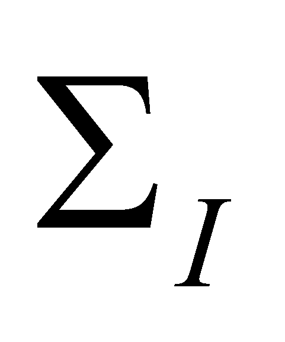
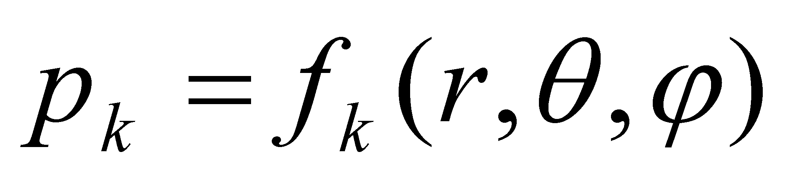
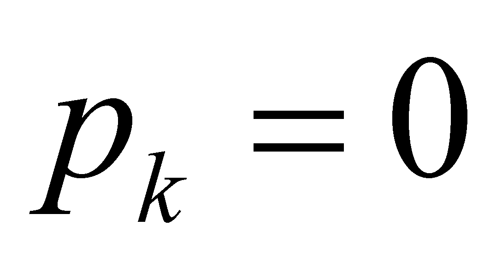
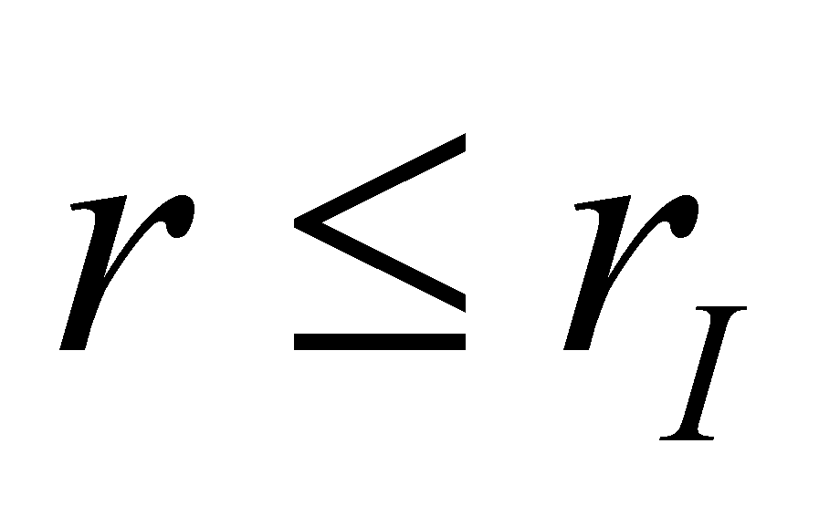
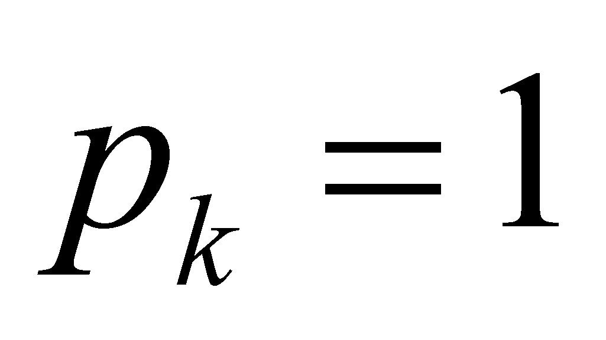
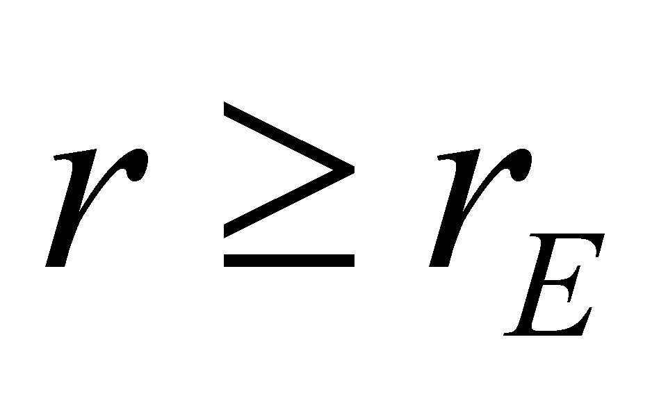
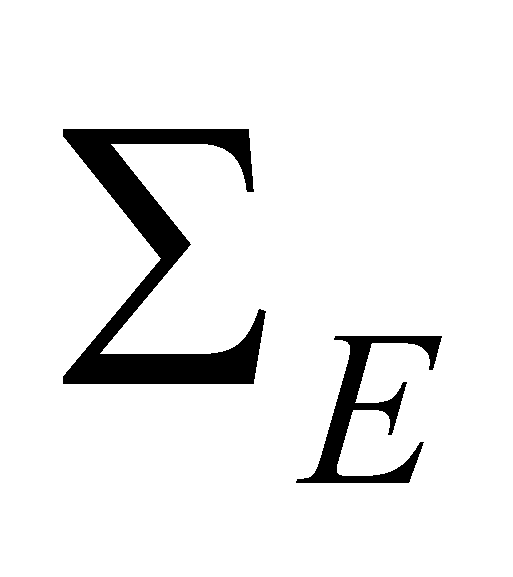
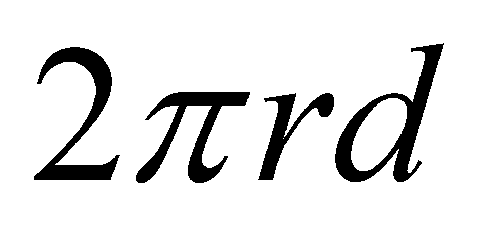
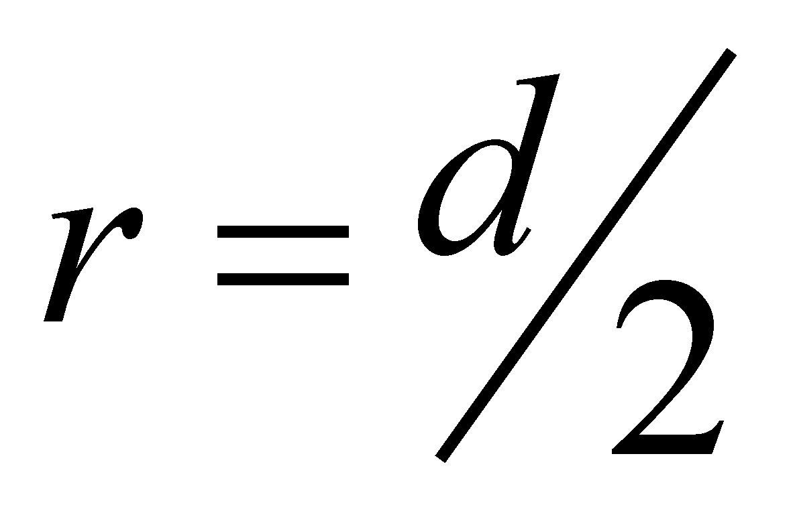
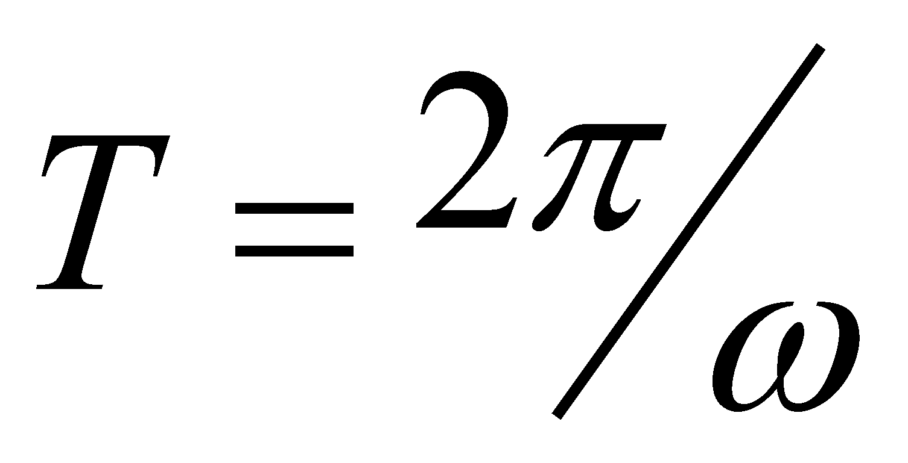

|
|
|
We have noticed in the previous sections that RBS is a spatial zone with a non-even distribution of the flux density, zone which is found at the boundaries of a MS. The figures 7.2.3.1 and 7.2.4.1 have shown some cross sections running through these zones. If due to simplicity reasons, we shall consider that the surface  of the inner medium M1 has a spherical shape, then, the section from this figure might be seen as a fraction of a radial section running through RBS. In this case, the unevenness of the flux density distribution from the transition space is radial (the normal lines nI and nE being collinear with the radius of the inner domain). According to the definition 7.2.2.1, for each RBS there is a certain pk value of its transmittance, which is specific to a certain k-type of flux which tries to cross it. The numerical value of this transmittance may be dependent by means of a relation fk which is characteristic to each k-type flux, by the value of another attribute (which is considered to be independent). For instance, in case of a S-type distributed MS, made-up from atoms, which has an invariant spatial distribution36 against its inner reference system (that is also a spatial one), the relation:
 (7.2.5.1)
defines, under polar coordinates, (more appropriate for the spherical shape) the distribution of this transmittance for a certain type of flux. If we are dealing for instance, with an atomic or molecular outer influx (an atomic or molecular beam), at which the RBS transmittance of the above-mentioned S medium is insignificant (we may consider it null), in case of a spherical RBS,  for any value  (where rI is the radius of the surface ) and  for any  (rE being the radius of the theoretical surface  from the figure 7.2.4.1). However, in case of a neutrons flux, the distribution is much more complex; fortunately, due to the scope of this section, we are not interested in the accurate distribution relations of pk, but rather in the fact that these distributions really exist, and accordingly, we need to know what is the independent amount (distribution support). As also regards the S-type spherical medium (e.g. a bearing ball), the value of RBS transmittance for the atomic or molecular fluxes is null for any kind of domain (even an elementary one) of the surface; in this case, we may state that the surface spatial distribution of pk is even. If on a RBS, there are sections with different permeability at the same flux type, a non-even surface distribution (of the permeability) may exist.
Comment 7.2.5.1: At the same type of molecular flux (e.g.: air flux), the above-mentioned ball has a null transmittance which is evenly distributed on the entire area of RBS, whereas a bio-system which breaths (e.g.: a human) has specialized zones from RBS (the oral cavity is one of them), whose permeability against this type of flux is controlled from the inside, which can be one (during the mouth breathing) or null (when the mouth is voluntarily closed). The non-even surface distribution of the transmittance on RBS is specific (as we are about to see in the following chapter) to MS which are controlled from the inside by an information processing system (IPS).
So far, we have briefly discussed about the spatial distribution of RBS transmittance of a S-type of medium, distribution which is invariant in case of this kind of medium. If the value pk (from the relation 7.2.5.1) applicable for the k-type flux remains invariant, namely, there are no observable modification processes, we may state that for this kind of flux, RBS permeability does not depend on time, or it is permanent (temporal equipartition).
Comment 7.2.5.2: The bounding surfaces of S-type media (this category includes the solids, as well as the bio-systems, or the artificial systems), have a permanency character of the transmittance if the intensity of the incident flux does not exceed the dissociation threshold of the medium’s elements, or the medium type change (phase transformation). In case of the bio-systems, the form of the outer RBS (plasma membrane of cells, or the epidermis of the evolved organisms) is generally variable (the bio-systems are MS with controlled deformability), but this aspect does not impair the value of RBS transmittance, which remains permanently null for all the unwanted37 fluxes, and variable (non-permanent) for the desired fluxes, but this may be achieved only through the sections which belong to the specialized transfer zones.
Much more complex, but also much more interesting, are RBS problems with non-permanent transmittance (with uneven temporal distribution), which are those RBS which own a time-variable transmittance. Let us consider as an example the case of a spherical-shaped, solid body with diameter d which deploys a circular revolution motion, in a normal plane on the revolution axis xy placed at a distance r towards the body core (see fig.7.2.5.1), subjected to the incidence of a coherent F flux, with its direction parallel with the axis xy and with an even spatial distribution. As a result of the revolution motion, the body generates a toroidal volume with the interception surface of the flux (on a normal plane on xy).
Fig. 7.2.5.1
By assuming that RBS of the rotating body is impermeable to the F flux, as a result of its revolution motion, the flux which crosses the orbital plane shall be different from the incident one on this plane (lower). The motion of the solid body across the circular pathway means a flux which is distributed in a toroidal volume, which is a constant effective section flux, existing only under the limits of the toroid surface. But this fact means that there is a flux inside the toroidal surface and not in its exterior, therefore, we are dealing with a non-even spatial distribution of the flux density on this surface which, according to the definition 7.2.2.1, means that this particular surface is a RBS, but one with a non-permanent transmittance. Let us consider the case of  (in order to cancel the gap from the ring core) and a revolution period  (being the angular speed of the body revolution motion around the axis xy).
In this case, for a flux F with its effective section equal to its cross section of the ring surface (on the flux direction), the lower is the transfer velocity v of the flux, at the same angular speed, the incident flux shall be scattered (reflected) by the rotating body at a greater extent, otherwise speaking, the toroidal RBS transmittance along the direction y shall depend both on the flux’s transfer rate, and on the revolution velocity of the rotating body. If the flux’s transfer rate increases, then, the toroidal RBS permeability shall increase in proportion to this rate, but it will remain permanently subunitary (the flux scattering is maintained). This is the RBS case whose permeability to a specific flux type depends on the flux’s transfer rate38 and on the rotational speed of the generating body (temporal distribution of RBS).
Comment 7.2.5.3: The fact that a non-even distribution of a flux generates a RBS becomes obvious for the human eye if the incident F flux from the figure 7.2.5.1 is a photon flux from the visible range. In such case, the eye is able to see a part of the scattered photon flux, and if the body’s rotational period is shorter than the eye inertia (about 0.1 s), we would be able to see a diffuse toroidal surface and not the spherical body, as if a toroidal object would be found at that position.
An interesting case for this kind of “revolution-type” (non-permanent) RBS is the one when the F flux continues to be parallel with the axis xy (for simplicity), but it is corpuscular, with its effective section equal or less than the cross section of the rotating spherical body and it occurs periodically (pulsating). In this case, a dependence of the toroidal RBS permeability is generated not only by the transfer rate but also by the frequency and the phase of the periodical flux; by assuming that the revolution frequency and the flux frequency are equal, if the moment of the flux occurrence coincides with the moment of the body presence, the transmittance is null, increasing according as the displacement reaches the boundaries of the circular object and it is unitary during the remaining period. This clearly shows that as regards the revolution-type RBS (or oscillating) there is the possibility that under specific conditions39, their transmittance to be equal to one (because RBS does not really exist for that temporal range). Does it not seem to you that this fact resembles with the tunnel effect?
These RBS types whose permeability has both a spatial and a temporal distribution belong to RBS class with a spatial-temporal distribution. Other two sub-classes are included in this class:
RBS with a deterministic (coherent) spatial-temporal distribution, which also comprises the above-described example of the rotating body with determined and invariant orbital parameters (body size, spatial position of the rotation axis, of the plane and orbital radius, of the orbital frequency etc.). This RBS type has a permeability which depends both on the transfer rate of the incident fluxes, and also on the frequency distribution of these fluxes (in case of the periodical fluxes);
RBS with a stochastic spatial-temporal distribution, at which the surface permeability has a random value which is both spatial and temporal, with only statistical mean values of its transmittance. This surface type occurs when there is an interaction (an intersection) of the fluxes whose carrier material objects are spatial-temporally spread and accordingly, their bounding surfaces are not contiguous or conjunct (the moving objects do not make-up a compact object). The stochastic RBS is that spatial area which contains inside all the impact points (interaction) of the objects which belong to the opposite fluxes. A general property of the stochastic RBS is that their permeability can never be null, because the flux objects are scattered (there are spaces with unitary permeability between their elements).
Comment 7.2.5.4: When we have presented the state’s RBS and its defense system, we were talking just about this kind of RBS, because in case of an external aggression, (an outer unauthorized influx which tries to penetrate that particular RBS), the defense system also fights back with a flux, but an opposite type of flux, which by means of composition (interaction between the flux objects) must stop (in the first stage) the aggression flux and then, it must reject it (the reflexion’s equivalent) to the outside. If we take as example an air-borne assault during the second world war, the outer influx was made from an escadrille of bombardment aircrafts, and the inner influx consisted in a set of projectiles which were shot by the anti-aircraft artillery or by the hunting aircrafts. The impact between the elements of those two opposite fluxes had a partly deterministic character (the missiles’s aiming and guiding systems), but also a major random weight (either due to the weather conditions, or due to technical malfunctions or gun crew ability). Finally, the entire interaction process of the two fluxes took place on a RBS with stochastic distribution, with a couple of km thickness (the zone of the air combat), with the equilibrium surface placed inside it (this will be a concept developed later on), which was able to move depending on the flux resources of the two parts, either outward (aggression fight-off), or inward (aggression success).
The stochastic RBS may be widely found inside DS (more clear at G-type ones), where every element of the medium “is competing” with its nearby neighbors for the division of an indispensable resource - space - more precisely, its vital space in which the outer kinetic flux of the element is confined (that is the space required for the element’s individual motion, which is in relation to its energy amount taken from the total energy stockpile of the medium from which it belongs to). This volume which is statistically computed by comparing the volume of medium to the number of elements, is an abstract volume (a mean calculus value); in fact, the elements which temporarily own a higher energy amount (the ones placed on Maxwell’s curve of the velocity distributions towards high speed values) shall have a higher available space (that is the equivalent of a palace in the people’s world (#)), whereas the elements with energy resources less than the mean values, must get content to a much less space. Relevant for our discussion is the fact that on this stochastic RBS which settles the specific volume per each element, the sum of the outer kinetic trafluxes of the nearby elements at a medium, under an equilibrium state, must be equal to the traflux (also kinetic) of the element from the inside, which means that inside this elementary stochastic RBS to exist the equilibrium surface of the two opposite fluxes, and this surface to be invariant (obviously, on average basis as well).
The RBS classifications which were mentioned so far have been made according to the distribution type criterion of its transmittance. RBS can be also categorized according to the organization level (on the abiotic scale) of the objects which are set in motion, and which in this way, will generate the unevenness of the motion distribution which is required for the occurrence of a RBS. If we are starting from EP level, it is obvious that the material systems belonging to this class have an external RBS (which intervene for instance in case of the collisions between particles). The transfer processes of the fluxes which make-up the electric, magnetic, nuclear or gravitation fields (towards and from EP) are located through this RBS, as well as the kinetic fluxes of the neighbouring EP, or of the photons which cross through this surface. At the moment of a bi-particle system formation, system made-up from two EP with opposite charges, the motions of the two system elements shall be two fluxes confined in the volume occupied by the system (for example, the volume of a hydrogen atom). These closed fluxes shall produce two RBS with spatial-temporal distributions as it was mentioned above, RBS with deterministic (periodical) distributions, which are spatially disjoint or conjunct, out of which, an internal one (generated by the proton’s motion) and an external one (generated by the motion of the peripheral electron). We have already noticed that in case of RBS with spatial-temporal distribution, so that a flux transfer between elements can be possible, the two distributions must be inter-related, but most of all, to exist a inter-correlation at the phase level of the flux frequency. Otherwise speaking, MS made up from EP must have an inner coherency of the flux frequency at the phase level (we shall see later on that this coherency must be in a co-phasal state, or as it is also called, with positive reaction). We are not going to minutely describe the atomic structure, but we shall only find that the union of the real bounding surfaces generated by the proton and neutron motions will lead to the formation of nuclear RBS, and the RBS union generated by the motion of the peripheral electrons shall make-up the electronic outer RBS, divided also in layers with spatial-temporal distributions specific to the individual electronic orbitals. These electronic RBS which have became spatially conjunct as a result of the atoms assembling (through chemical bonds), shall make-up the molecular RBS, and further on, RBS of NM (permanent in case of liquids or solids, stochastic for gases).
Comment 7.2.5.5: The RBS of MS are very different, mostly due to the organization level of the material system which owns them, but absolute all of them are in accordance with the above-mentioned mathematic model. For example, the atmosphere of a planet with its radial-uneven distribution (its density varying exponentially with the radius), makes-up a RBS with different attributes according to the effective section of the incident fluxes; in case of corpuscular fluxes with the size grade of the effective section equal or less than the cross section of the gas molecules (for example, high energy EP or photons), the atmosphere will behave like a stochastic RBS, whereas for the compact isotomic fluxes with large sections (e.g.: meteorites or comet nucleus) the same atmosphere shall be a RBS with a permanent and quasi-even surface distribution of the transmittance. In case of these latter fluxes, and depending on their intensity, incidence angle and effective section, a transmission (by hitting the earth crust) or a reflexion (through deflection to the cosmic space) of that flux40 might be generated. A RBS can be also considered as the outer limit of the terrestrial magnetosphere, which by means of its uneven distribution of the magnetic flux (stored inside the magnetosphere) is able to deflect the coherent flux of the solar wind (made-up from ionized atoms and EP) which cross through this magnetosphere, by protecting in this way the terrestrial biosphere against the harmful effects of these ionizing radiations.
36 According to the relation 7.2.5.1, k is the index of the flux type and not the index of the distribution element which was mentioned in chapter 2. Due to simplicity reasons (for not using two parameters) it may be considered that the relation fk for k-type flux is a continuous function.
37 Fluxes whose intensity does not exceed the RBS destruction threshold.
38 Attention! In this case, the dependence is only related to the speed and not to the flux intensity which also involves the density of the attribute distributed on the support objects which are set in motion.
39 Inter-correlation conditions between the temporal or frequency distribution of the flux and the temporal or frequency distribution of RBS transmittance.
40 The same problem is at the landing of the current space ships, case in which it is very important to maintain an optimum angle at the moment of the entrance into the atmosphere (incidence angle), the deviation from this angle might lead either to the thermal destruction of the ship or to its reflection back into the cosmic space.
Copyright © 2006-2011 Aurel Rusu. All rights reserved.